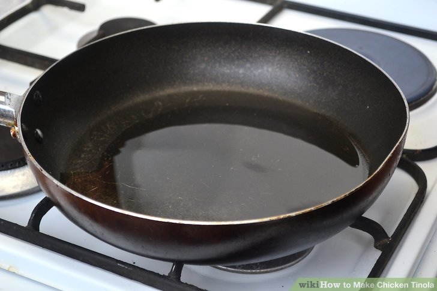
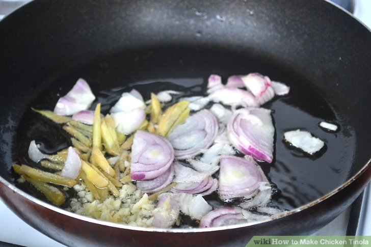
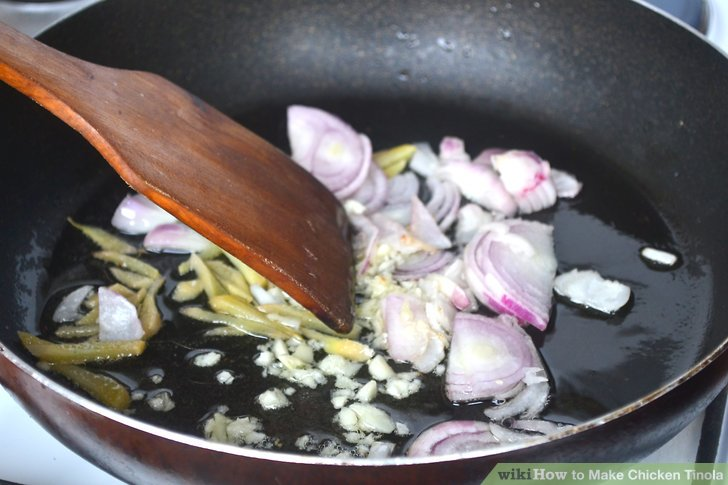
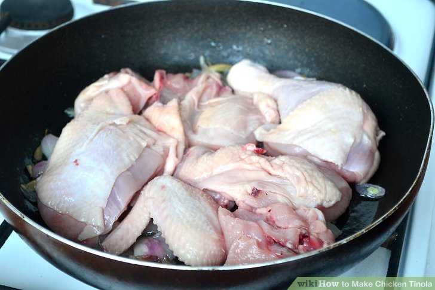
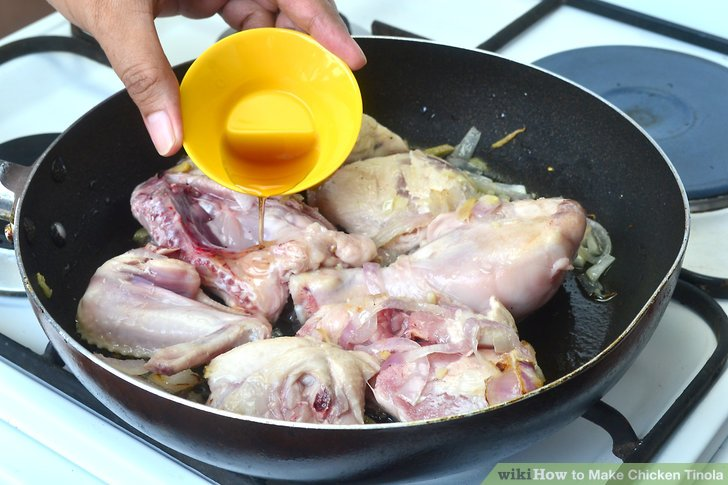
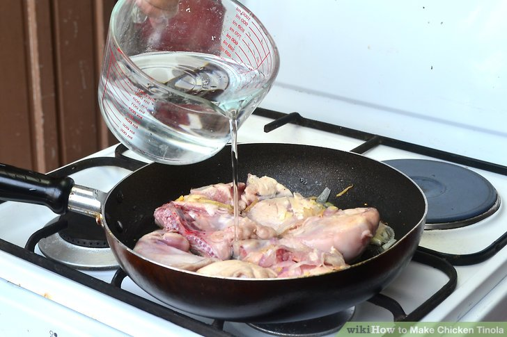
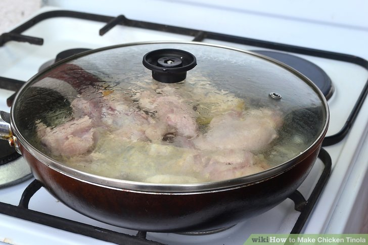
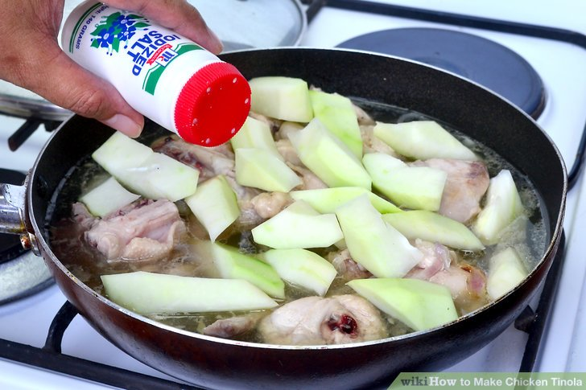
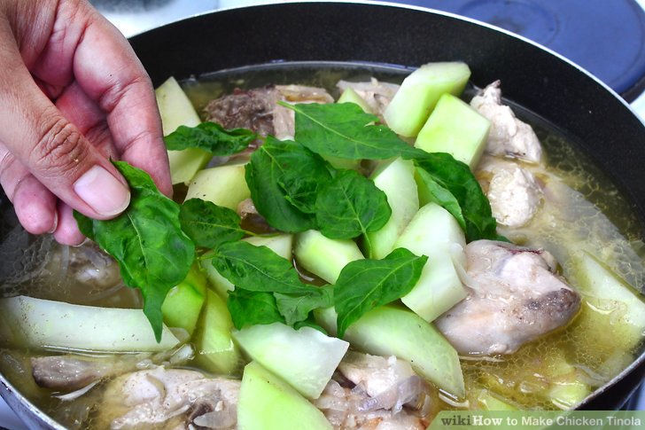
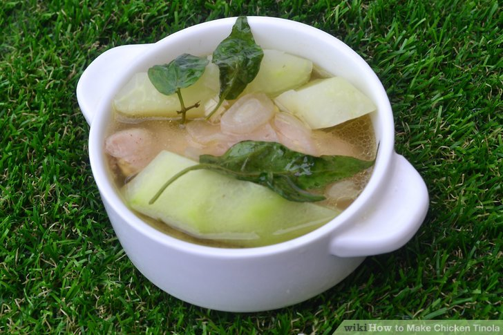

<!DOCTYPE html>
<html> 
    <head> 
        <title>Chicken Tinola Recipe</title>
    </head>
    
    <style>
body {
    font-family:cursive;
    margin: 0;
    padding: 0;
        }

img {
    border: solid rgb(0, 0, 0);
    box-shadow: 0 0 20px;
}

h1 {
    background-color: #000000;
    background-size: contain;
    font:bolder;
    color: #ffeeee;
    padding: 0%;
    text-align: center;
        }

p {
    text-align: center;
    margin: 20px 0;
        }

img {
    display: block;
     margin: 0 auto;
        }

h2 {
    background-color: #333;
    color: #fff;
    padding: 1rem;       
    margin-top: 20px;
    text-align: center;
        }

ol {
     padding: 2;
     margin: 0 auto;
     text-align: left;
        }

li {
    margin-bottom: 10px;
        }

h3 {
    margin-top: 20px;
    text-align: center;
        }


    </style>
</html>
<body>
    <h1>Chicken Tinola</h1>
    <p>Chicken tinola is a classic Filipino dish that features ginger and onion as its main flavors.
        By cooking the chicken at a low temperature for a while, you'll bring out its flavor too and sliced green papaya provides a tangy counterpoint to all the spice of the dish.
        Chicken tinola is an ideal soup for a cold, rainy day, and you don't need to be an experienced cook to make it at home.</p>
    
    <h2>Ingredients</h2>
    <ul>
        <li>1 whole chicken cut into serving pieces</li>
        <li>36 ounces rice washing</li>
        <li>1/2 piece green papaya cut into wedges</li>
        <li>1 tablespoon garlic minced</li>
        <li>1 piece onion chopped</li>
        <li>1 thumb ginger cut into strips</li>
        <li>2 tablespoon fish sauce</li>
        <li>1 cup Hot pepper leaves</li>
        <li>3 tablespoons fish sauce</li>
        <li>1/4 teaspoon ground black pepper</li>
    </ul>
    <h2>How to make Chicken Tinola</h2>
    <h3>Cooking the Aromatics</h3>
    <ol>
        <li>
            Heat the oil until it shimmers.
            Add 1 tablespoon (15 ml) of vegetable oil to a pot.
            Place it on the stove, and heat it on medium until it begins to shimmer, which should take about 3 minutes.</li>
        
        <li>Add the onions, ginger, and garlic.
            Once the oil is hot, add a small, chopped onion, 2 to 3 cloves of minced garlic, and 2 tablespoons (6 ¼ g) of chopped fresh ginger.
            Stir the ingredients in the oil to ensure that they're well coated.</li>
        
        <li>Saute the mixture until it becomes fragrant.
            Allow the onion, garlic, and ginger to cook on medium heat until they become limp and aromatic.
            It should take approximately 2 to 3 minutes.
            Stir the mixture occasionally as it sautes to ensure that it cooks evenly.</li>
        
    </ol>
    <h3>Adding the Chicken and Broth</h3>
    <ol>
        <li>Mix in the chicken and cook it until the juices run clear.
            When the onion, garlic, and ginger are finished sauteing, add a 3 to 4 pound (361 to 814 g) whole chicken that's been cut into serving piece to the pot.
            Cook the chicken on medium until it browns slightly and the juices run clear, which should take about 5 to 7 minutes.</li>
        
        <li>Stir in the fish sauce and cook the mixture for 1 to 2 minutes.
            When you've finished browning the chicken, add 2 tablespoons (30 g) of fish sauce to the pot.
            Mix it in well, and allow the mixture to cook for another couple of minutes.
            You can find fish sauce at Asian markets or the international foods aisle in many general grocery stores.</li>
        
        <li>Add the water and bring the mixture to a boil.
            Pour 5 cups (1.2 l) of water into the pot.
            Raise the heat to medium-high, and allow the mixture to come to a boil, which may take approximately 10 minutes.
            A film may develop on the top of the water as the mixture boils. Use a spoon to skim it off the top and discard it.</li>
        
        <li>
            Reduce the heat and simmer until the chicken is cooked through.
            Once the mixture reaches a boil, lower the heat to medium.
            Cover the pot, and allow the mixture to cook until the chicken is tender and fully cooked, which should take approximately 30 to 35 minutes.</li>
        
    </ol>
    <h3>Finishing the Soup</h3>
    <ol>
        <li>Stir in the papaya and cook until it's tender.
            When the chicken is cooked through, add a small green papaya that's been pared, seeded, and cut into 2-inch (5-cm) wedges to the pot.
            Allow the mixture to cook until the papaya is tender but still slightly crisp, which should take about 3 to 5 minutes.</li>
        
        <li>Season the soup with salt and pepper.
            Once the papaya is tender, add some salt and black pepper to the soup.
            Stir them in well, and taste the mixture to adjust the seasonings if necessary.</li>
        
        <li>Mix in the spinach and cook the mixture until it wilts.
            When you're happy with the soup's flavor, add a bunch (250 g) of fresh spinach leaves with the stems trimmed off to the soup.
            Allow the spinach to cook in the soup until it just wilts, which should take approximately 2 to 3 minutes.</li>
        
        <li>Remove the soup from the heat and serve it while it's hot.
            Once the spinach is wilted, turn the heat off and take the pot off the stove.
            Ladle it into bowls, and eat it while it's still warm.</li>
        
    </ol>
</body>